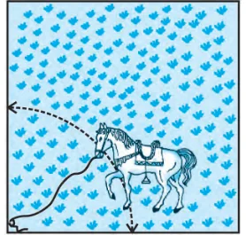
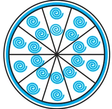
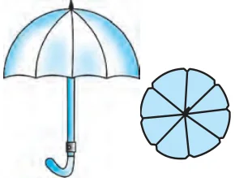
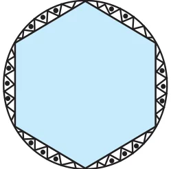

EXERCISE 11.1
Unless stated otherwise, use \(\pi = \dfrac{22}{7}\).
- 1.Find the area of a sector of a circle with radius 6 cm if angle of the sector is \(60^{\circ}\).
- 2.Find the area of a quadrant of a circle whose circumference is 22 cm.
- 3.The length of the minute hand of a clock is 14 cm. Find the area swept by the minute hand in 5 minutes.
- 4.A chord of a circle of radius 10 cm subtends a right angle at the centre. Find the area of the corresponding : (i) minor segment (ii) major sector. (Use \(\pi = 3.14\))
- 5.In a circle of radius 21 cm, an arc subtends an angle of \(60^{\circ}\) at the centre. Find:
- (i)the length of the arc
- (ii)area of the sector formed by the arc
- (iii)area of the segment formed by the corresponding chord
- 6.A chord of a circle of radius 15 cm subtends an angle of \(60^{\circ}\) at the centre. Find the areas of the corresponding minor and major segments of the circle. (Use \(\pi = 3.14\) and \(\sqrt{3} = 1.73\))
- 7.A chord of a circle of radius 12 cm subtends an angle of \(120^{\circ}\) at the centre. Find the area of the corresponding segment of the circle. (Use \(\pi = 3.14\) and \(\sqrt{3} = 1.73\))

- 8.A horse is tied to a peg at one corner of a square shaped grass field of side 15 m by means of a 5 m long rope (see Fig. 11.8). Find
- (i)the area of that part of the field in which the horse can graze.
- (ii)the increase in the grazing area if the rope were 10 m long instead of 5 m. (Use \(\pi = 3.14\))

- 9.A brooch is made with silver wire in the form of a circle with diameter 35 mm. The wire is also used in making 5 diameters which divide the circle into 10 equal sectors as shown in Fig. 11.9. Find :
- (i)the total length of the silver wire required.
- (ii)the area of each sector of the brooch.

- 10.An umbrella has 8 ribs which are equally spaced (see Fig. 11.10). Assuming umbrella to be a flat circle of radius 45 cm, find the area between the two consecutive ribs of the umbrella.
- 11.A car has two wipers which do not overlap. Each wiper has a blade of length 25 cm sweeping through an angle of \(115^{\circ}\). Find the total area cleaned at each sweep of the blades.
- 12.To warn ships for underwater rocks, a lighthouse spreads a red coloured light over a sector of angle \(80^{\circ}\) to a distance of 16.5 km. Find the area of the sea over which the ships are warned. (Use \(\pi = 3.14\))

- 13.A round table cover has six equal designs as shown in Fig. 11.11. If the radius of the cover is 28 cm, find the cost of making the designs at the rate of ₹ 0.35 per \(\text{cm}^{2}\). (Use \(\sqrt{3} = 1.7\))
- 14.Tick the correct answer in the following :
Area of a sector of angle \(p\) (in degrees) of a circle with radius R is - (A)\(\dfrac{p}{180} \times 2\pi \text{R}\)
- (B)\(\dfrac{p}{180} \times \pi \text{R}^{2}\)
- (C)\(\dfrac{p}{360} \times 2\pi \text{R}\)
- (D)\(\dfrac{p}{720} \times 2\pi \text{R}^{2}\)